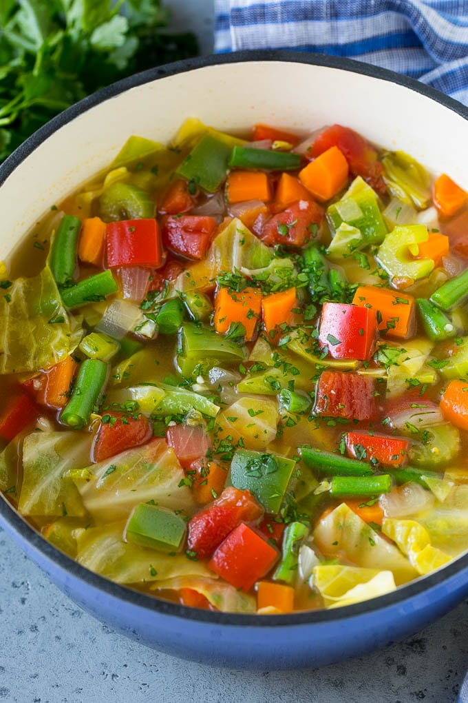

Cabbage Soup

This legendary tomato and cabbage soup will increase your physical strength x2!
Recipe Link
Ingredients:
5 carrots, chopped
3 onions, chopped
2 (16 ounce) cans whole peeled tomatoes, with liquid
1 large head cabbage, chopped
1 (1 ounce) envelope dry onion soup mix
1 (15 ounce) can cut green beans, drained
2 quarts tomato juice
2 green bell peppers, diced
10 stalks celery, chopped
Steps:
Place carrots, onions, tomatoes, cabbage, green beans, peppers, and celery in a large pot.
Add onion soup mix, tomato juice, beef broth, and enough water to cover vegetables.
Simmer until vegetables are tender. May be stored in the refrigerator for several days.